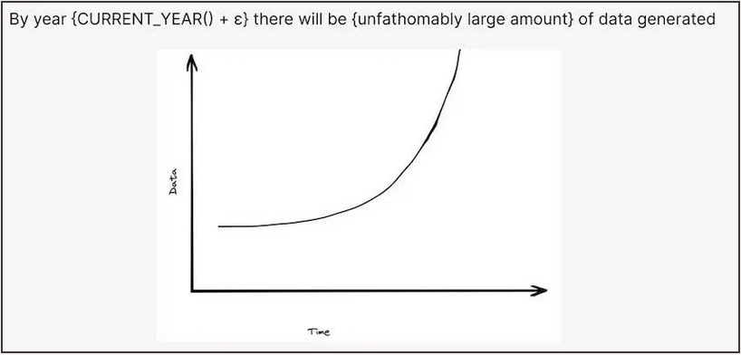
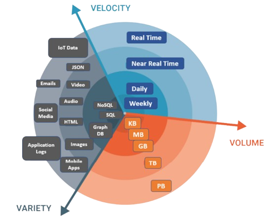
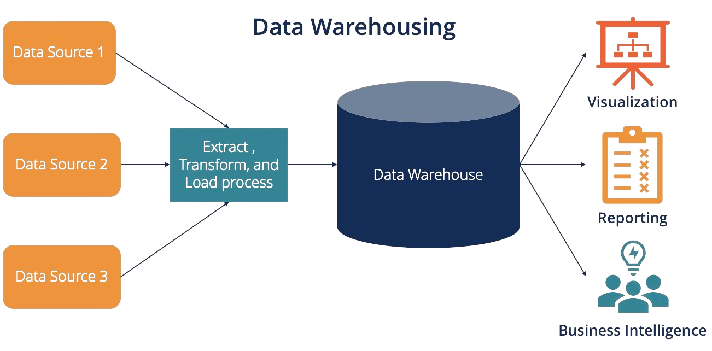
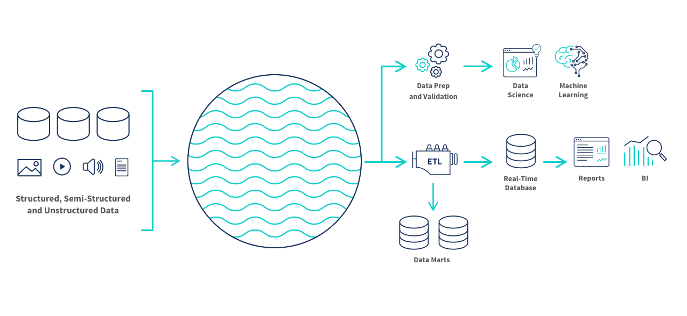
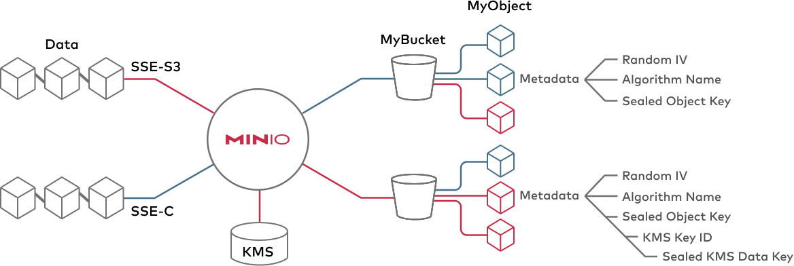
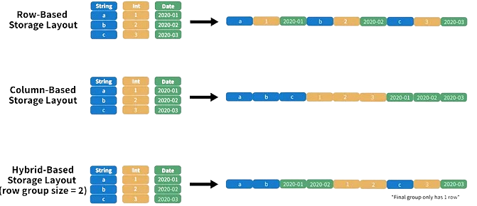
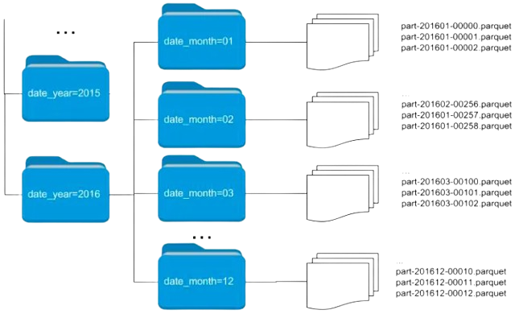
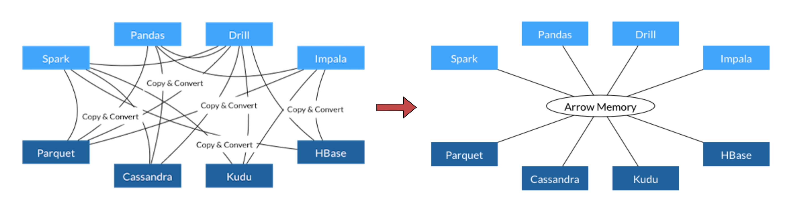
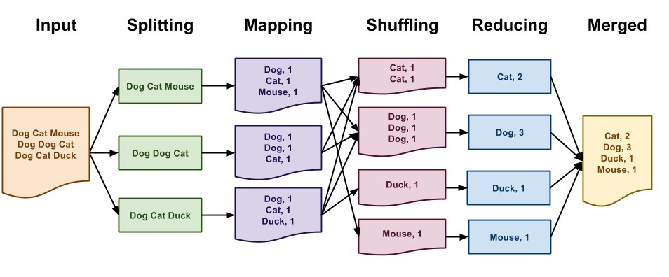

Mise en production des projets de data science
Cours de 3e année à l’ENSAE (Séances #2 et #3)
2024/2025
Rappels séance #1
Retrouver les slides précédentes sur ensae-reproductibilite.github.io/slides/
Rappels séance #1
Sortir des notebooks pour réduire le coût du passage de l’expérimentation à la production
- Adopter des pratiques similaires à celles du monde du développement
Suivre les conventions d’un langage et adopter une structure lisible de projet
Adopter une structure de code (niveau micro) et de projet (niveau macro) lisible
En résumé
Les bonnes pratiques sont le premier pas vers des projets plus évolutifs, plus fiables et plus simples à maintenir
Rappels séance #1
Converger vers ce modèle :

Rappels séance #1
Converger vers un modèle où on distingue :
- Code: stocké sur
Git - Configuration:
- Environnement logiciel: à part (cf. séance #4)
- Variables d’environnement: fichier
.envà part, non exposé grâce àdotenv
- Données:
- Exclues du contrôle de version
- Des formats plus adaptés que d’autres
4️⃣ Traitement des données volumineuses
“The obligatory intro slide”

Enjeux
- Tendance à la massification des données
- Relatif aux capacités de stockage et de traitement

Choisir des technologies adaptées
1️⃣ Infrastructures de données
2️⃣ Formats de données
3️⃣ Frameworks de traitement de données
1️⃣ Infrastructures : historique
Historiquement : stockage dans des bases de données
80’s : essor des bases de données relationnelles
- Modèle de la data warehouse

1️⃣ Limite des data warehouses
- Peu adaptées aux données big data
- Passage à l’échelle coûteux
- Limitées aux données structurées
- 2010’s : modèle du data lake
1️⃣ Le data lake
- Un stockage peu coûteux fait pour des données
- Volumineuses
- Brutes
- Issues de sources variées

1️⃣ Le stockage objet
- Standard des data lakes dans le cloud

2️⃣ Formats de données
- Le choix d’un format de données répond à un arbitrage entre plusieurs critères :
- Public cible
- Finalité (traitement, analyse, diffusion)
- Volumétrie
- Interopérabilité
2️⃣ Limites des formats usuels
- Les formats usuels (
CSV,JSON,XML) sont utiles pour :- Le traitement de faibles volumes de données
- La diffusion de données
- Limités pour le traitement de données volumineuses
- Non-compressés : espace disque élevé
- Orientés ligne : peu adaptés aux traitements analytiques
2️⃣ Orientation ligne vs. orientation colonne

2️⃣ Parquet : propriétés
- Orienté colonne
- Adapté aux traitements analytiques
- Conçu pour être écrit une fois mais lu fréquemment
- Optimisé
- Compression (jusqu’à 87 % moins d’espace qu’un CSV)
- Lecture du fichier (jusqu’à 34x plus rapide qu’un CSV)
- Interopérable
- Gestion native des méta-données
2️⃣ Parquet : partitionnement
- Division en blocs des données selon un critère
- Optimise la lecture pour certaines queries

3️⃣ Traitement in-memory
Parquetne résout pas tout- L’espace disque est optimisé
- Les données décompressées doivent passer en RAM
- Le framework adapté dépend de la volumétrie
3️⃣ Données volumineuses
- Calcul larger than memory optimisé
- Autre avantage : interopérabilité

3️⃣ Données massives
- Calcul distribué sur un cluster de machines
- Base : paradigme MapReduce

En résumé : pour traiter la volumétrie
Utiliser un format de données adapté (
Parquet)Utiliser des outils informatiques adaptés
- Suffisant la plupart du temps : calcul larger than memory optimisé (
Arrow/DuckDB) - Si volumétrie massive : calcul distribué (
Spark)
- Suffisant la plupart du temps : calcul larger than memory optimisé (
“Big Data is dead” ?
- Jordan Tigani : Big Data is dead
- “The big data frontier keeps receding”
- “Most people don’t have that much data”
- “Most data is rarely queried”
- Plaidoyer pour une parcimonie…
- … qui facilite la mise en production !
Illustration par la pratique
Objectif
- On part d’un projet n’ayant pas suivi les bonnes pratiques…
Objectif
… on finira le semestre avec un projet très ambitieux
A l’arrivée:
Objectif
- Les premières applications sont les plus chronophages: rendre le projet conforme aux bonnes pratiques
- Indispensable pour pouvoir progresser plus tard
Et la suite ?
Tout le contenu du cours est disponible est librement accessible sur:
Bonnes pratiques pour la mise en production des projets de data science (retour homepage)